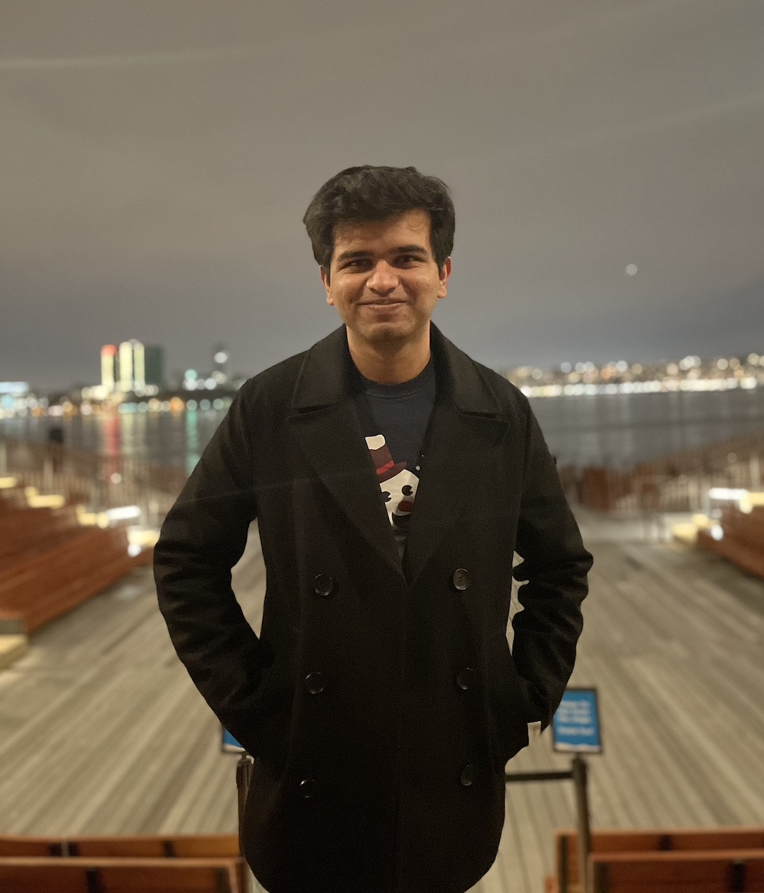

I am a Research Scientist at NYU Langone Health, working with Dr. Miriam Bredella, Prof. Krzysztof Geras, and Prof. Artie Shen on survival analysis, opportunistic imaging, and representation learning for medical imaging. Previously, I worked with Prof. Sumit Chopra and Prof. Geras on end-to-end pipelines for lesion detection and classification on multi-modal mammography scans.
Prior to this, I was an Assistant Research Scientist at the NYU Center for Data Science, developing deep learning methods for medical image analysis under Prof. Jacopo Cirrone. I hold a Master's in Computer Science from NYU (2023), with research on dense prediction and classification for medical imaging — resulting in three publications at ECCV 2022, ICCV 2023, and MLHC 2023.
My undergraduate work at Manipal University Jaipur focused on autonomous rover systems for the University Rover Challenge 2020, where our team reached the international semi-finals. I have contributed to Facebook AI's VISSL and Lightly AI's SSL open-source projects, implementing DeepMind's BYOL approach. I also co-founded the Hult Prize chapter at Manipal, tripling the campus incubation rate.
Updates
- Jul 2024Research on semi- and self-supervised learning featured in the NYU Data Science blog.
- May 2024"Shifting to Machine Supervision…" published in Nature Scientific Reports.
- Aug 2023"Enhancing Medical Image Segmentation…" accepted at ICCV 2023 CVAMD Workshop.
- Jul 2023"Efficient Representation Learning for Healthcare…" accepted at MLHC 2023, PMLR.
- May 2023Research featured in the NYU CDS blog post.
- Oct 2022"CASS: Cross Architectural Self-Supervision…" accepted at NeurIPS 2022 SSL Workshop.
- Aug 2022"A Data-Efficient Deep Learning Framework…" accepted at ECCV 2022 MCV Workshop.
- Jan 2021Admitted to NYU's MS in Computer Science with a 25% academic scholarship.
- Dec 2020"Classification of Melanoma…" accepted at ICCI-2020 (IIIT-Pune).
- Nov 2020Finished in the top-30 at the International Rover Challenge 2020.
- Mar 2020International semi-finalists at URC 2020.
Teaching
CSCI-GA 3033 / DS-GA 3001 — Data Science for Healthcare
Graduate Adjunct Employee with Prof. Jacopo Cirrone · NYU CDS & Courant · Jan–May 2023
DS-GA 1007 — Programming for Data Science
Grader with Prof. Jeremy Curuksu · NYU Center for Data Science · Sep–Dec 2022
Awards
- NYU Academic Scholarship (25%), 2021